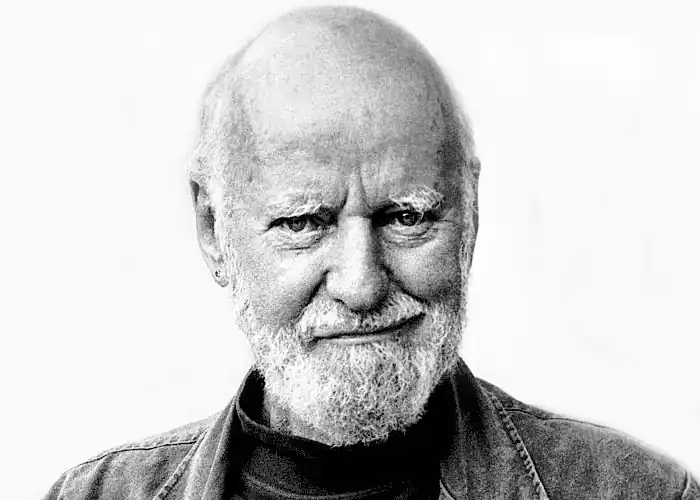

Народився 24 березня 1919 року в Йонкерсі, штат Нью-Йорк. Після хвороби матері у дитинстві жив у Франції у своєї тітки, яка потім знову переїхала в США. Учасник Другої світової війни. Навчався в університеті штату Кароліна і Колумбійському університеті, де 1947 року отримав вчений ступінь магістра з англійської літератури. Продовжив навчання в Сорбонні, отримавши докторський ступінь в області поезії.
Після одруження 1951 року Ферлінгетті переїхав до Сан-Франциско, де викладав французьку мову. З 1953 року видає журнал "City Lights", що отримав назву на честь фільму Чарлі Чапліна "Вогні великого міста". Одночасно було відкрито магазин з такою ж назвою. З 1955 року почав видавати поетичні збірки. У жовтні 1956 року в четвертому випуску серії "Кишенькові поети" вийшла поема Аллена Гінзберга "Крик" (Howl). Після виходу тираж був вилучений поліцією, Ферлінгетті й співробітник магазину були арештовані, проти них було порушено кримінальну справу за звинуваченням у порушенні благопристойності, однак Ферлінгетті виграв справу в суді. Запис слухань справи був опублікований в 1961 році під назвою "Виття цензора". 1969 року Аллен Гінзберг зауважив, що Ферлінгетті заслуговує "якої-небудь Нобелівської премії книговидання" — настільки його робота збагатила всю сучасну культуру.
Автор понад 30 поетичних збірок. Ферлінгетті також писав експериментальний роман "Її" (Her, 1960), експериментальну драму, мемуари, перекладав з французької ("Слова" Жака Превера, 1959), оформляв книги, писав олією, брав активну участь у різних громадських рухах. Помер 22 лютого 2021, Сан-Франциско, Каліфорнія.